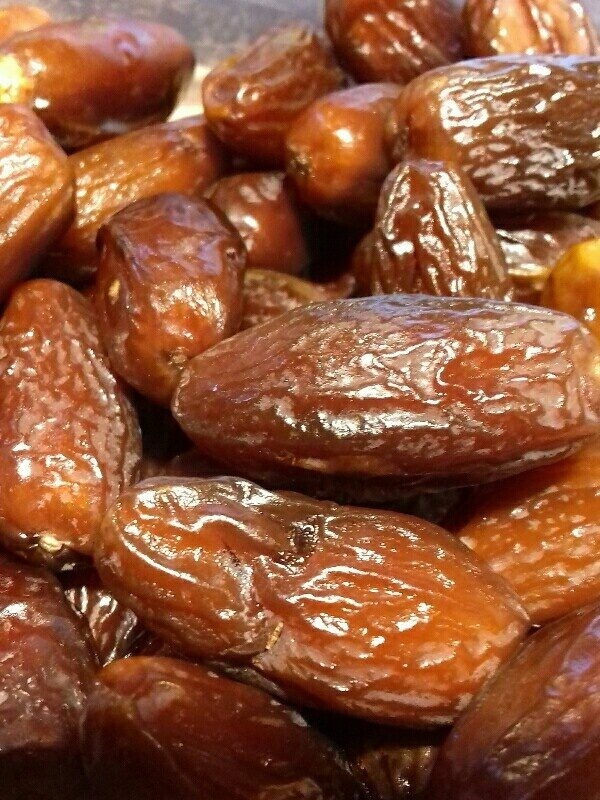
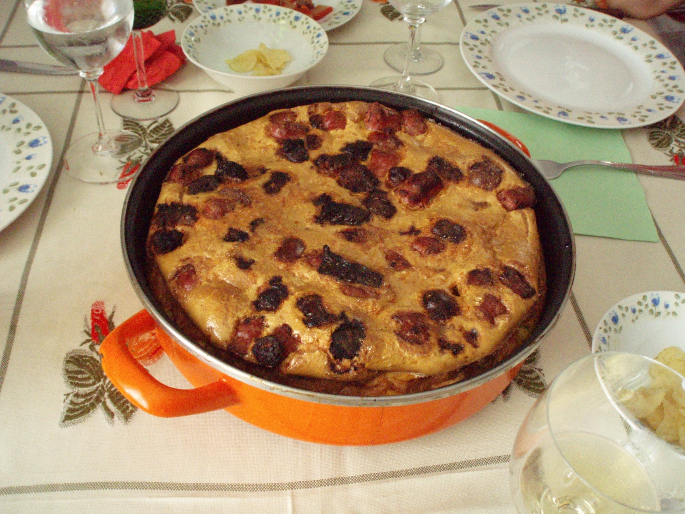
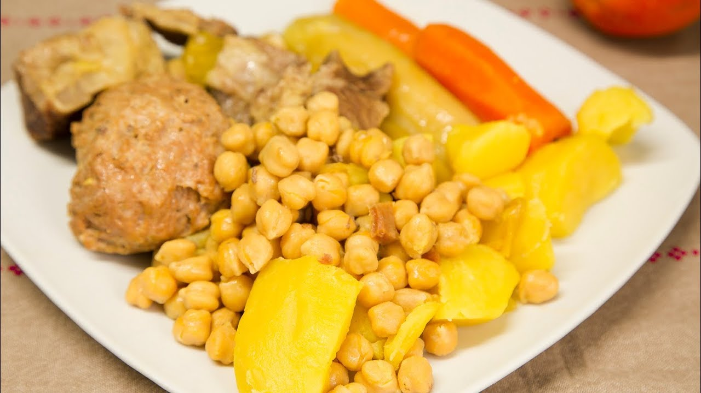

In addition to the rich cultural wealth, Elche also offers first-rate cuisine, using a wide variety of products available in the region. The rich orchard and the proximity to the coast mark the culinary history of the city. The most famous dish in the cuisine of Elche is Arroz con Costra, but we must also highlight the rabbit and snail rice, without forgetting the traditional Puchero con Pelotas. The Mujol del Hondo and all the aiolis and seafood from the coast are also highly appreciated. In dessert, we must highlight the fruits of the land (dates, figs, pomegranates ...) and the Tortada de Elche or Pan de Higo. Among the traditional drinks, we find lavender flower distillate, star anise (popular "Nugolet") and date wine.
When looking for places to taste the gastronomy of Elche, the city offers many opportunities, both in the urban area and in the nearby countryside of Elche. The visitor has a wide variety of restaurants, including traditional Mediterranean cuisine, international cuisine and the most modern signature dishes of the region. If you want to taste snacks, here are some interesting places where you can taste the most exquisite products.
  